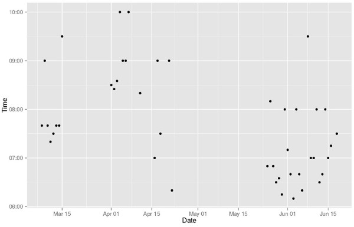
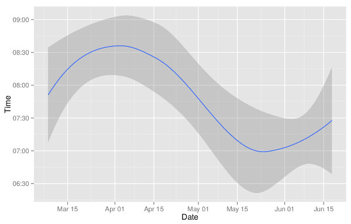

之前读了4点起床 这本书，于是记录了一下这几个月的起床时间。。。

再来个趋势图。虽然近一个月以来已经有了些许进步，但还是不稳定。

好吧，懒惰是需要记录的，再接再厉，要养成早起的习惯！
read more本来只是抱着试一试的态度，申请了两所学校的 Ph.D. 项目，没想到很快便得到了一个去瑞士面试的机会。自己第一次坐飞机，亦是第一次走出国门，算是生命中的一件大事吧，小记一下。
大多数人可以走出国门出去看看，心态都应该是相当好的吧，要么好奇，要么兴奋，我的状态的确有些奇怪。首先，行程时间被安排在了春节期间，看着宿舍里的哥们们一个又一个拖着行李，高高兴兴的回家过年去了，我也有真想要飞到家里去的冲动；二来，第一次坐飞机，而且又是国际航班，内心不免有些忐忑，怎样买飞机票，怎样登机，怎样过夜转机，飞机会不会颠簸等等，在我这里都成了一堆乱糟糟的要解决的问题。另外，可能也是灾难电影看多了吧，我还不忘给自己买个飞机保险，并托付给了我同学，如果真的发生了什么不幸的话，你可要好好...。最后一点，我还的确向师姐咨询了一下欧洲那边的治安情况，还好师姐给了正面的答复。本来还想是不是要随身携带一把小匕首保护我的小身板以防不测，后来，也是师姐的话打消了我的顾虑，因为。。因为飞机上不让带。。
经过一路长途跋涉，历经转机，火车及地铁，最后，我终究还是迷路了 ...
read more好几个月没有写过东西了，本以为搭建了一个博客，自己可以多学习一下写作，没想到还是挨不过自己的懒惰，不过，因为明年3月份就要毕业了，所以最近也确实是忙透了。
总结下来，这几个月，还是做了不少事情的，首先值得庆幸的是自己的第一篇SCI论文终于发表了，这至少可以让自己达到毕业的要求。在交大生科院这样“恶劣”的生存环境下，能够按时毕业已属不易。对于自己的现实情况而言，能够发表这篇文章也是更加不容易，我也很庆幸并且感谢期间受到了这么多老师以及同学的帮助及鼓励。经历了这个过程之后，我不会再因为听到XXX发表了XX篇重要的文章而露出敬仰的神色，因为我明白，每个人的情况都是不同的，在大多数情况下，一个人可以发表很多篇或者发表了比较重要的文章，根本的原因并不在于他个人的能力，而在于他恰好进入了一个高产的实验室而已。那么怎样去查看一个人的科研能力呢，等他建立了自己的实验室再去看吧！
另一件事就是写自己最后的毕业大论文，这段时间比较辛苦，因为大论文的截稿日期只有1个月左右的时间了，而我们要至少完成规定格式的4～5万字。每天半夜一两点从实验室里走出来，奔驰在交大昏黄的路灯下，竟也没有一丝倦意。本来以为论文查完重，应该可以好好喘口气了，没想到又抽中盲审。。（这可是个小概率事件，肿么每次吃年夜饭抽奖的时候就抽不中偶呢。。。）
一个人过于忙碌，往往会扼杀自己的创造力，因为“忙”，没有时间深入思考一些对于自己很重要的事情，所以就会 ...
read more今天中秋节，是个团圆的日子。
吃完晚饭，照例走到实验室，空荡荡的，没有一个人。对于像我这种没有工作日和周末之分，对于节假日也丝毫不敏感的人来说，面对偌大的实验室，竟也有些想家的感觉。这个暑假没有回去，离家也有9个月了，估计姥姥、老爸、老妈、老姐应该也会很想我吧。
东西一点也看不进去，索性把实验室的灯全都关掉，一人看场电影也不错。我喜欢看老电影，而且对于好的电影喜欢一遍又一遍的看，也不会觉得厌倦。就看《阿甘正传》吧，我喜欢那句话：
“Life is like a box of chocolates. You never know what you're gonna get."
明年3月份就要毕业了，对于未来却没有任何打算。我想，对于每个20～30岁之间的男生来说，这应该都是一段艰难的日子。因为在这个阶段，他需要去做很多非常非常重要的事情，但同时 ...
read more因为整天守在计算机旁，所以我可以一边工作，一边听歌。
我从不单曲循环，不管自己有多么喜欢一首歌曲。更多的情况是，一旦我发想自己很喜欢一首歌，那么它将会很少出现在我的 list 里面了。因为我担心，当它某一次循环时，我已经失去了最初见到它时的喜悦。
我也不会顺序播放。在一个 list 里面，听到一首歌，如果我的大脑会条件反射似的浮现起下面一首歌曲的内容，那么这个 list 也没有什么存在的意义了。
我一般只会随机播放，因为永远不会知道下面一首会是什么，对于未知的期待，总会使人有一丝莫名的欣喜。
不知从什么时候开始，我发现自己已经失去了安安静静欣赏一首歌曲的能力了，我总是不停的切换到下面一首，可能可以听到一半，也可能只听到一个前奏，然后，貌似它没有办法满足我的期待，又开始切换到了下面一首...
我想，这已经成了一种病态，只是一直在切换，而不是在欣赏，我又开始焦躁了。
爱比克太德说:
“人生如赴宴，当菜肴递到你面前时，可伸手取一份，但分量要合适；如果菜肴只是从你面前经过，就享用你盘里的食物；如果菜肴还未传到你这里，就应该耐心等待。”
试着去欣赏每一首你正在听的歌曲，而不是寄希望于未知的下一首 ...
read more在 linux 下面工作已经有一年半的时间了，最初只是被它简洁的外表所吸引，抱着玩一玩的心态，没想到几个月之后，windows 便被删掉了，linux 或许更适合我的工作。记得之前看过一篇报道，好像是说使用不同的操作系统，会对人的大脑结构产生不同的影响，我不知道这个是真是假，但我知道 linux 确实带给我一些不同于 windows 下面的操作习惯。
当我还是一个很菜的菜鸟的时候，我是那么讨厌命令行这种东西。如此多的命令，每个命令下面还有如此多的参数，哦，老天，我还是去睡会儿吧。。 这种感觉，就如我初一时刚刚接触英语时，英语老师指着书最后面的单词表说，“这些全都要背过！” 我当时的第一反应是：You are kidding me?! 在我最初的印象里，我认为应该不会有人可以弄懂这么多字母的排列组合吧。我讨厌背东西，或者也可以说因为不擅长，所以才讨厌。
现在，已经是一个不太菜的小菜鸟了。随着对命令行的深入，它的威力已经远远超出了我的想像。我可以用 less 轻松地打开几个 G ...
read more